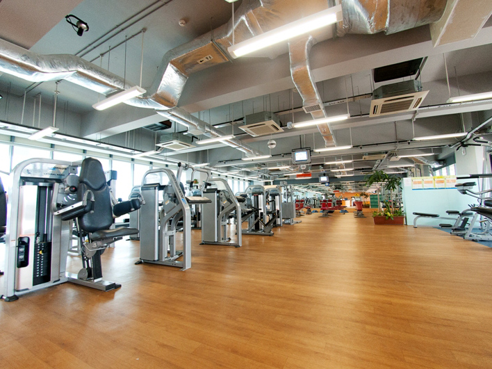

Jurong West Activesg Gym

About
Jurong West ActiveSG Gym, formerly known as Jurong West ClubFITT Gym, is a public gym operated by Sport Singapore.
As the 3rd integrated facility with pool features, Jurong West Sport Centre, formerly known as Jurong West Sport and Recreation Centre, has raised the benchmark for all swimming pools in 2006. With close proximity to the Pioneer MRT station, it has been able to position itself to be a sport and leisure venue.
More than just being a choice venue for sports activities, Jurong West Sport Centre offers a range of
food and beverage outlets with ample sheltered parking lots.
Entry Fees
| Type |
Peak |
Off Peak |
| Single Entry |
$2.50 |
$2.50 |
| Monthly Pass |
$30.00 |
$15.00 |
6 Month Pass |
$160.00 |
$40.00 |
| Yearly Pass |
$300.00 |
$80.00 |
Note: Off Peak entry is from 11am to 4pm.